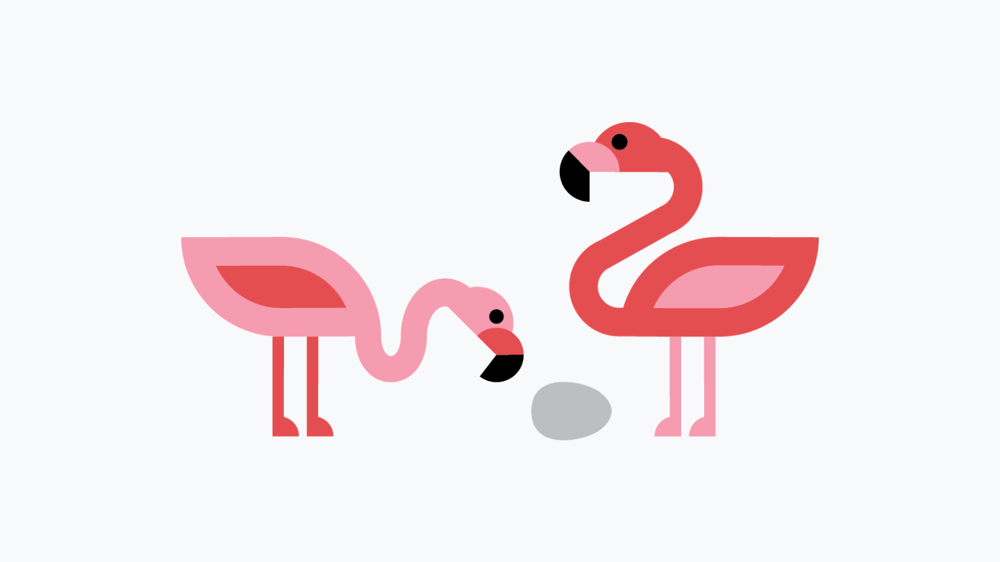
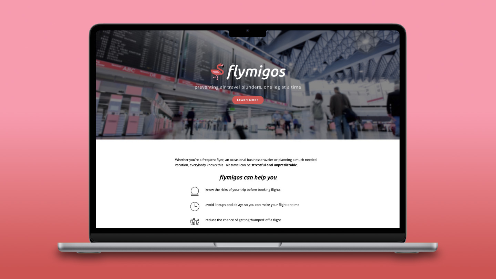
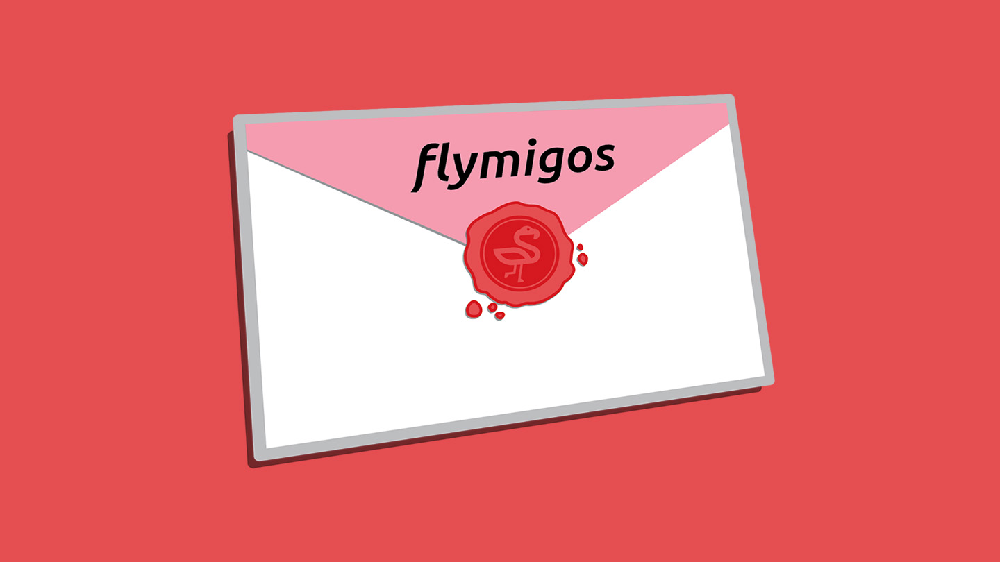
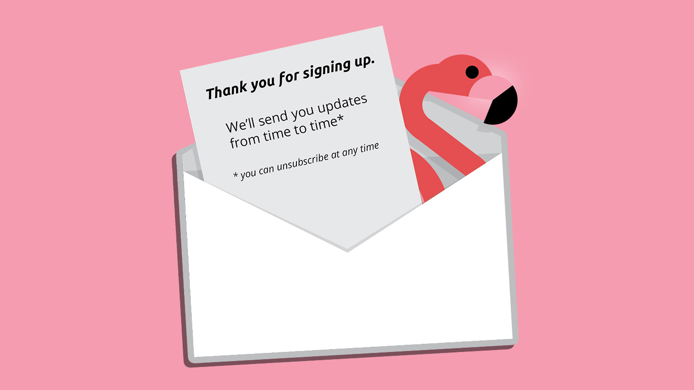
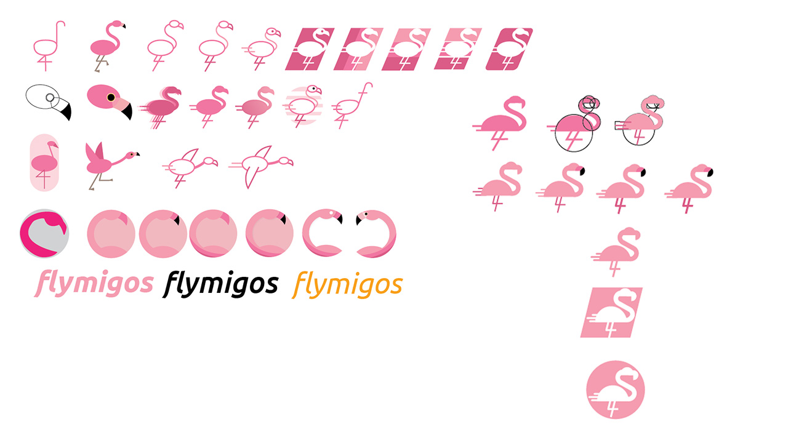

Flymigos
Startup Branding






I collaborated with the founder of Flymigos, a community-driven air travel advice platform, to create a logo, style guide, and website. The branding process involved extensive iteration on a flamingo-themed logo that balanced visual appeal and scaleable simplicity. With the logo and branding established, I developed a cohesive landing website, integrating stock imagery and graphical elements to align with the vibrant red and pink scheme. Unfortunatly, this project did not move past this early development stage and is no longer active.
View website
Tools:
Illustrator, Photoshop, Squarespace